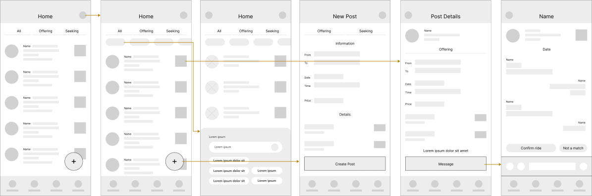

Poly Ride: The solution to Cal Poly students' ride sharing problem.
Background
Despite the attractive location on the Central Coast, San Luis Obispo poses difficulties for students to commute from and to their home cities. Many Cal Poly students do not have a car, so ride-sharing is their main city-to-city transportation method. The current channel for ride-sharing here is a Facebook group “Cal Poly Ride Share” with 28.3K total members.
Users
Pain Points
To know where users are having problems, I gathered secondary data by requesting Facebook Insights from the 28.3K-member group. In addition, I also conducted a survey myself with 30 Cal Poly respondants. The most common frustrations are:
1. Lack of trust (63% of respondents): The current process doesn't require any email or student status verification. 2. Time-consuming browse (80% of respondents): Users have to sift through every post to find the one they need. 3. Lengthy message process (63% of respondents): Postings usually miss many attributes, so users usually need to message a lot of people.
Goal
To create a ride share application for Cal Poly students, where users can offer and seek rides conveniently and safely.
To do that, we ask the questions:
• How might we ensure the platform is accessible to only Cal Poly students?
• How might we allow students to easily find the post they need?
• How might we improve the messaging process to be more efficient?
User Journey
User Flow
Wireframes

Prototype
Testing
Method
To test the usability of Poly Ride, I asked three users to perform the following tasks:
• Find all rides that go from San Jose to San Luis Obispo
• Check a ride to see if trunk space is available
• Message, confirm, and view upcoming ride
Insights
For the last task, it took participants more than anticipated clicks to view upcoming rides. Although trivial, it directly interferes with the primary user journey. Upon interviewing, I found out that the CTA button’s language was misleading, and the navigation icon was not prominent enough. To ensure a seamless experience for users, I adjusted the language and a few interactions.
Iteration
Interactive Prototype
Reflection
Poly Ride was not brought to development, but it has proved great success from user feedback and testing. Poly Ride was able to address the primary pain points: the lack of trust, the time-consuming browse, and the lengthy message process.
Due to the scope of this project, a few features were not included but would be worth discussing in the future:
• In-app payment integration
• Set notification for a seeking criteria
• Car/personal identification sharing
I am working to send Poly Ride to the Cal Poly Center for Innovation and Entrepreneurship, where it can actually come to life. Please stay tuned!